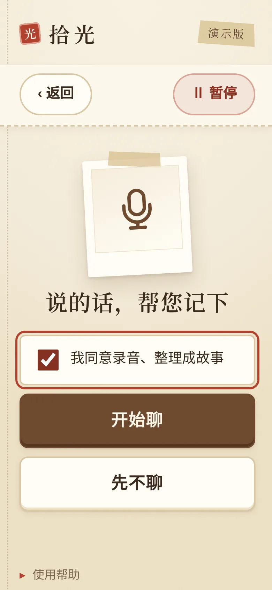
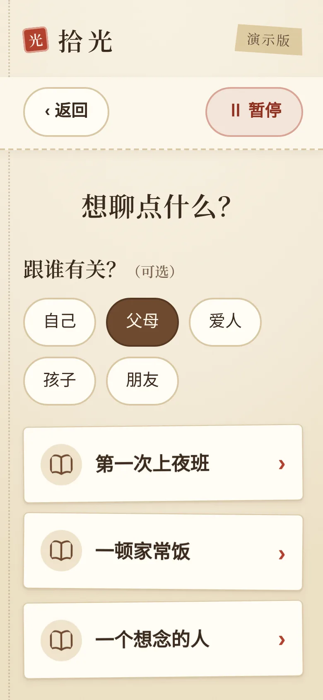
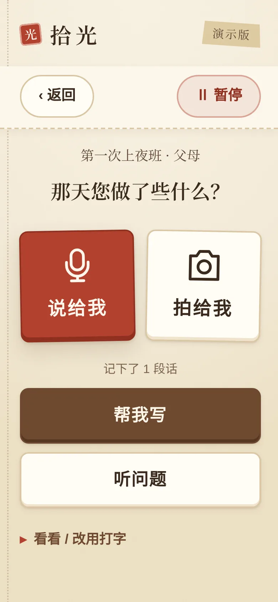
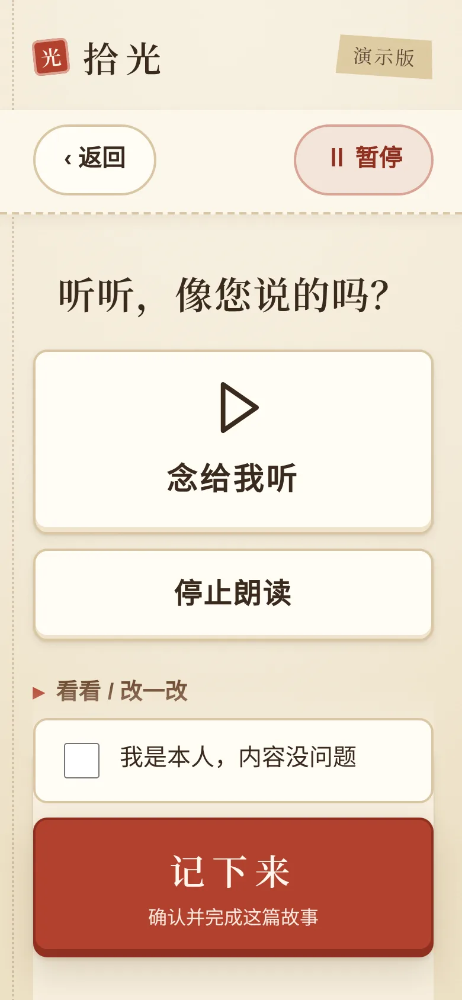

讲故事的人，和读故事的人，不是同一个。
这是一个面向家庭内部的代际产品。子女往往是发起者和首要读者，但叙事权、纠错权和分享决定权，始终属于讲述者本人。
老人本人
想被倾听、回顾人生、保留自己的说法。不擅长打字和复杂操作，容易累，记不清具体年份。
子女
想了解父母的经历、留下家庭记忆。可以准备主题和老照片、邀请长辈，但不能替长辈同意或确认。
孙辈与后代
认识长辈、了解家从哪里来。短篇故事、照片和声音能降低他们的阅读门槛。
一位不会打字的老人，
能不能只靠说话，留下一段自己认可的故事？
先把一段故事做真，再慢慢攒成一本。
从老人的处境出发，我把需求收敛成四条贯穿全流程的设计原则，每一条都落到了具体的界面规则上。
一段就算完成
不要求讲完一生。第一次使用就能得到一篇可留存的故事，多篇再汇成合集。首页“我的回忆录”分“正在聊 / 已完成”，随时接着来。
少看字，多开口
主界面只有大图形和短提示：“开始聊”“说给我”“拍给我”。打字、编辑、导出都收进可展开区域，不在第一眼出现。
不替老人说话
只整理老人讲过的内容，不补写情节、不猜照片里是谁。记不清就保留“我记得大概是……”。家人补充的线索，不会自动变成老人的经历。
随时可以停
每一页顶部都固定“返回”和“暂停”。暂停会停止朗读、保存已说的话和改过的草稿，下次从停下的地方继续。
老人最可能卡住的，是留下第一段话。
我把“从进入到被家人读到”拆成八层漏斗，两种发起入口分别统计，在“首次有效讲述”之后汇合。按按钮成功不算数，老人真正表达出来才算。
- F0 到达与发起自主点击 / 后代邀请到达
- F1 自愿参与本人理解用途并同意
- F2 首次有效讲述留下一段本人讲述并保存
- F3 可成篇素材人物、经过、结果讲清楚
- F4 可审核草稿生成成功，来源检查通过
- F5 本人认可定稿“像我会说的话”
- F6 完整成品留存图文与音频同版保存
- F7 阅读与再次回忆家人读到，老人愿意再讲
两个高风险层，对应两次设计取舍
- F2 讲不出来。不会打字的老人，语音是唯一靠谱的入口。所以原型接入了真实的浏览器语音转文字：边说边出字，说完能改，不支持的浏览器老实提示改用打字，不伪造识别结果。
- F4–F5 不像我。草稿必须念给本人听，由本人勾选后点“记下来”；改过一个字，旧的确认就失效，需要重新确认。“存这句话”和“记下来”严格分开。
漏斗排序是根据目标用户和实现方式做出的风险判断，不是实测流失数据。
AI 只提建议，确认的权力留给人。
目标产品用一个主控 Agent 调度几个职责清楚的能力模块，每轮只做一件事：问一个问题、整理一次、或者请老人核对。同意、确认、分享、删除这些关键动作，由确定的业务规则执行，模型不能自己决定。
来源可追溯
每个关键事实都能对回老人的讲述或已确认的素材。照片识别只当提问线索，不认定人物身份。
版本与确认绑定
修改生成新版本，旧的确认和分享随之失效；已完成的故事不会被悄悄覆盖。
情绪优先于完成率
遇到不愿回忆的话题就停止追问，允许换题或结束，不用催促去提高转化。
每一页只做一件事，下一步永远看得见。
视觉选择了老相册和手账纸：米黄纸、拍立得相框、和纸胶带、横格信纸。它让“留下回忆”这件事有熟悉的触感，也天然适合大字号和高对比。印章红只留给最关键的一步。
两个入口，一本回忆录。“开始聊”给老人，“帮长辈开始”给子女；下方按“正在聊 / 已完成”找回每一篇。

先问一声本人同意才开始。整行都能点的大勾选框；子女准备的线索，不能替老人同意。

想聊点什么从一件小事讲起。“跟谁有关”可选可取消，只用来调整提问，不会写进故事事实。

一次一个问题说给我 · 拍给我。一屏只有一个问题和两个大入口；“听问题”会把问题念出来。
说的话，一句句落在信纸上
原型接入浏览器自带的中文语音识别，不需要后端，也不用申请密钥。
- 边说边出字，未定稿的字也实时显示
- 停顿被浏览器打断时自动续听
- 点“说好了”，自动补句末标点，错字直接改
- “记下这段”才保存；“重说一遍”“不记这句”都不会留下内容
- 没有麦克风权限、断网、浏览器不支持时，用大白话提示改用打字

像您说的吗念给我听，再记下来。“记下来”是全流程唯一的印章红大按钮，必须本人勾选；改过就要重新确认。
可读、可听、可导出。横格信纸排版的成稿，支持朗读、导出文字、打印 PDF；给谁看另外授权，可撤销。
行高 1.75
字号 24px
大入口卡片
最终确认
每页都有
尊重减弱动效
下一步：请老人和家人，真的来用一用。
原型已经能走通“同意 → 说话 → 成稿 → 本人确认”的完整闭环。接下来计划邀请 8–12 组老人和家人做小规模观察，验证的，是老人能否独立开口、AI 写的是否像本人，以及家人是否真的会读。
独立讲出第一段
在老人自己的手机上，测试安静、嘈杂、停顿和方言下的听写与改字，记录需要别人帮忙的次数。
“像我会说的话”
接入真正的 AI 访谈与第一人称整理，逐句对照讲述，确保没有新增的无来源事实。
家人真的会读
完成可靠保存、音频成品和可撤销的分享，再看授权后的阅读率和老人是否愿意再讲。
原型为演示用途：语音转文字为真实浏览器能力；AI 访谈、写作与照片识别为设计方案。示例故事均为虚构。